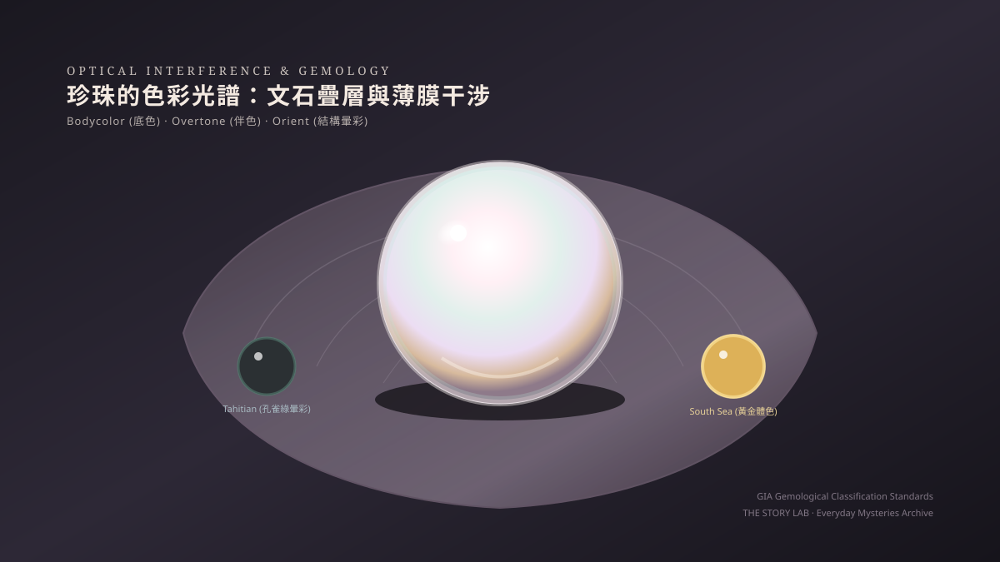
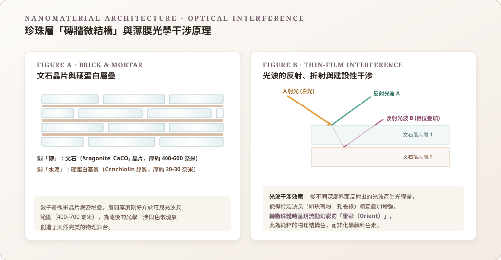

珍珠的顏色從哪裡來？
海洋與光學的微觀編織：解構珍珠層磚牆結構、天然色素與薄膜光學干涉

在所有珍貴寶石中，珍珠是極少數完全由生命體在水底孕育而出的活態瑰寶。當我們凝視一顆優質珍珠時，很少有人能移開視線——它不像鑽石那般耀眼刺目，卻散發著一種溫潤幽微的迷人光暈。更令人驚奇的是，珍珠絕不僅有單調的乳白：從日本阿古屋的櫻花粉白、南洋島嶼的尊貴濃金，到大溪地幽深莫測的孔雀綠與紫黑茄色。在幽暗的貝殼緊閉深處，究竟是什麼自然魔法調配出了這些幻變萬千的色彩？
生命的防禦：沙粒與珍珠層的千年堆疊
傳說中，珍珠是人魚的眼淚，或是天降甘露墜入蚌殼的結晶。但在生物學的世界裡，珍珠的誕生其實源自軟體動物一場漫長而堅韌的「防衛機制」。
當外來異物（如寄生蟲、碎屑或人工植入的核）侵入雙殼貝內部時，貝類無法將其排出體外。為了保護自身嬌嫩的器官免受異物刮傷，母貝體內專門分泌外殼的外套膜（Mantle）上皮細胞會開始增生，像蠶吐絲一般將異物層層包裹，分泌出一種特殊的有機與無機複合成分——珍珠質（Nacre）。
經過數月甚至數年的不懈分泌，上千層極薄的珍珠質包裹結晶，最終形成了我們手中晶瑩剔透的珍珠。而正是這成千上萬層微觀結構的厚度、成分與排列方式，為隨後的光學奇蹟鋪就了基石。
色彩的三重奏：體色、伴色與暈彩的精密區隔
在珠寶鑑定界，形容一顆珍珠的顏色絕不能簡單地說「它是粉色的」或「它是黑色的」。美國寶石研究院（GIA）將珍珠的色彩視覺效果精確拆解為三個獨立而共存的層次：
1. 體色（Bodycolor / 底色）：這是珍珠本體最根本的主色調。它是由母貝在分泌珍珠質時，同時沈積在硬蛋白層中的天然色素（Pigments）或微量元素所決定的。例如，白唇貝孕育出清透的純白與銀色；金唇貝（Pinctada maxima）吸收並沉積特定類胡蘿蔔素複合物，呈現璀璨的金黃體色；而黑蝶貝（Pinctada margaritifera）則分泌大量的天然黑色素與紫紅素，形成深灰至墨黑的底色。
2. 伴色（Overtone / 伴光）：當你在柔和光源下觀察一顆白珠時，常會注意到它的邊緣或表面浮現一層若有似無的玫瑰粉（Rose）、象牙奶油（Cream）或冷冽的銀綠色。這層半透明飄浮在體色之上的色彩，就是伴色。它是由光線透過最外層極薄珍珠層時產生的輕度色散與反射形成的。
3. 暈彩（Orient / 游彩）：這是珍珠最為神祕、最令人沉醉的特質。當你輕輕在手指間轉動珍珠，表面會如同流轉的肥皂泡一般，折射出絢爛斑斕的彩虹色光（常見粉紅、翠綠與紫藍交織）。並非所有珍珠都能擁有出色的暈彩，只有當珍珠質晶體層排列極端平整、厚度高度均勻時，這種現象才會達到巔峰。
【微觀物理】磚牆結構與薄膜干涉：結構色的誕生
為什麼珍珠能像三棱鏡一樣分解出彩虹般的光芒？電子顯微鏡下的微觀世界為我們揭示了答案：

奈米「磚牆結構」：珍珠層在顯微鏡下宛如一座精密的微縮磚牆。每塊「磚塊」是由厚度僅 400 到 600 奈米（約為頭髮直徑的兩百分之一）的碳酸鈣多邊形薄片（文石 Aragonite）構成；而將這些磚塊牢牢黏結在一起的「水泥」，則是由幾丁質、絲狀蛋白質所組成的硬蛋白基質（Conchiolin），厚度僅約 20 至 30 奈米。
薄膜光學干涉（Thin-film Interference）：當白光照射到珍珠表面時，部分光線直接被第一層文石表面反射回眼中（光波 A）；而另一部分光線則穿透進半透明的晶片內部，折射後在第二層、第三層甚至更深層的晶片表面再次反射出來（光波 B）。
由於光波 B 在晶片內部多走了一段極微小的距離，兩道反射光波之間產生了「光程差（Phase Shift）」。當光程差正好是特定顏色光（如綠光或粉紅光）波長的整數倍時，這兩種波段的波峰便會相互疊加增強（建設性干涉）；其他顏色的波長則相互抵消。隨著視角改變，光程差隨之微變，於是我們便看到了流轉跳躍的彩虹暈彩。
品種的巡禮：四種經典珍珠的色彩身世
天然海域的氣溫、水質養分，以及母貝種類的遺傳基因，共同塑造了全球四大主流珍珠品種的獨特性格：
日本阿古屋珍珠（Akoya Pearls）：產自馬氏珠母貝（Pinctada fucata martensii）。由於溫帶水域四季溫差鮮明，冬季低水溫會使母貝生長減緩，珍珠質層分泌得格外緊密細緻。Akoya 以鏡面般的超強光澤（Luster）聞名於世，其標誌性的白透底色常伴隨明艷動人的「櫻花粉（Rose Overtone）」。
大溪地黑珍珠（Tahitian Pearls）：產自法屬波里尼西亞的黑蝶貝。雖然名為「黑珍珠」，但真正頂級的大溪地珠絕非死板的墨黑，而是以深炭灰為基底，在光線下散發出令人驚嘆的「孔雀綠（Peacock）」、「茄子紫（Aubergine）」與「開心果綠」暈彩。
南洋珍珠（South Sea Pearls）：孕育於體型龐大的大珠母貝（Pinctada maxima）。產自澳洲西北海域的白唇貝造就了大氣優雅的銀白南洋珠；而印尼與菲律賓海域的金唇貝，則產出如晨曦燦金般的「金珠（Golden South Sea）」，其珍珠層極厚，散發出絲緞般的沉穩貴氣。
淡水珍珠（Freshwater Pearls）：主要產自三角帆蚌（Hyriopsis cumingii）。由於無核養殖比重高，純珍珠質賦予其豐富多變的夢幻色彩譜系——從香檳橙、淡紫丁香（Lavender）到柔粉金，展現出驚人的日常親和力。
鑽石的光芒來自於嚴苛的地底高壓高溫與冷酷的幾何切工；而珍珠的色彩，卻是軟體動物在幽深海流中用生命對抗苦痛的漫長結晶。
當我們理解了文石晶片與薄膜干涉的微觀真相，珍珠的美非但沒有被冷冰冰的物理學消解，反而更增添了一份動人的哲思：最絢麗的彩虹暈彩，不在於外在的塗抹，而是一層又一層脆弱微小的晶體，在歲月的層疊包裹中對光線最深情的共鳴。